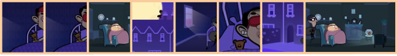
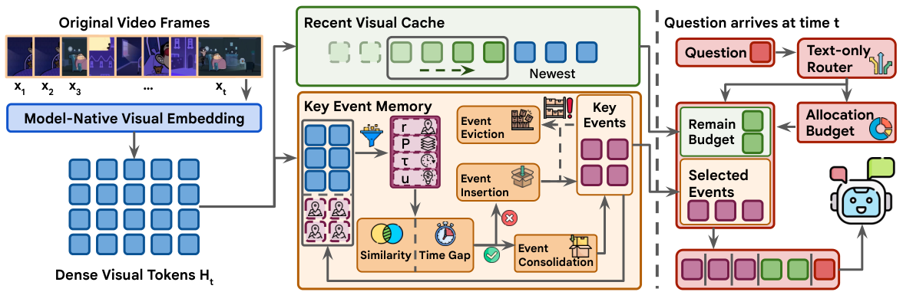
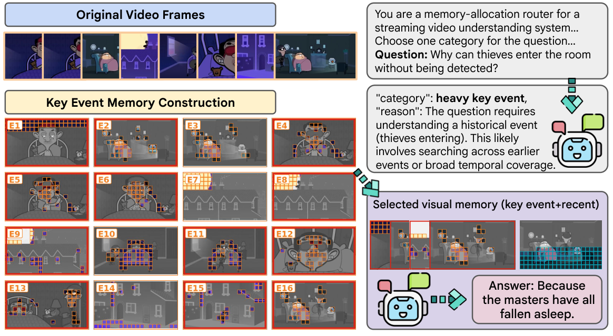

Preserve the present
Append visual embeddings to a fixed-capacity recent cache, retaining detailed evidence from the latest observations.
Keep the details of the present.
Remember the events that matter.

Decoder-facing visual tokens
Best compressed results, including ties
VLM backbones · 4 benchmarks
Paper-reported main results. Readout is ≈10% of dense visual input; persistent candidate memory is ≈20%.
Dense visual tokens accumulate as a video grows. Simply keeping fewer tokens can discard coherent event evidence or the fine details of what is happening right now.
KeyRec separates these two needs. A recent visual cache preserves detailed observations, while a bounded event bank organizes historical evidence. Incoming frames update both memories without knowing the question. When a question arrives, a text-only router allocates a fixed readout budget between them—without reprocessing historical frames.
The framework is training-free and operates on model-facing visual embeddings, supporting both modular Gemma VLMs and the encoder- and projector-free NEO-ov architecture.
One memory, two complementary views.
A fixed token budget for every answer.

Append visual embeddings to a fixed-capacity recent cache, retaining detailed evidence from the latest observations.
Propose novel events and use semantic similarity and temporal proximity to add, merge, or evict them within a bounded bank.
A text-only router chooses recent and event allocations, then retrieves by relevance or temporal coverage.
Explore the five router states in the Gemma streaming profile. The allocation values are from the paper; this is an explanation of the policy, not a live model.
For Gemma, KeyRec reduces retained visual context and language-model cost after visual encoding; it does not skip the vision encoder.
Frozen backbones. Matched frame sampling.
≈10% decoder-facing budgets for compressed methods.
Vanilla uses 100% of the sampled visual tokens. It is shown as an uncompressed reference. All values are reported in the supplied manuscript.
| Benchmark / subset | Backbone | Vanilla | STC-Pruner | STOM-CTR | CausalMem | KeyRec |
|---|
Bold indicates the best compressed result, including ties. “—” denotes an unsupported architecture.
At 512 sampled frames, KeyRec remains feasible while dense Vanilla runs out of memory in the paper’s LongVideoBench evaluation.
Gemma 4 E4B · Paper Table 2. Peak memory includes weights, ingestion, and query processing.
| Frames | Vanilla | STOM-CTR | KeyRec |
|---|---|---|---|
| 64 | 17.09 | 15.05 | 15.06 |
| 256 | 39.23 | 15.47 | 16.17 |
| 512 | OOM | 16.57 | 18.93 |
The trade-off: KeyRec adds routing overhead and uses more candidate memory than STOM-CTR. Long-video compression is not lossless; see the full paper for latency and accuracy comparisons.
A real example from the paper.
StreamingBench · NEO-ov 2B

The question needs evidence from preceding events. KeyRec selects historical events for temporal coverage and combines them with recent evidence.
“Because the masters have all fallen asleep.”
The orange patches are retained visual evidence. Red borders in the paper figure identify selected events.
A synchronized video and memory walkthrough will appear here. For now, the paper’s real example above shows the retained evidence and answer.
Read the method, experimental protocol,
ablations, and qualitative analysis.